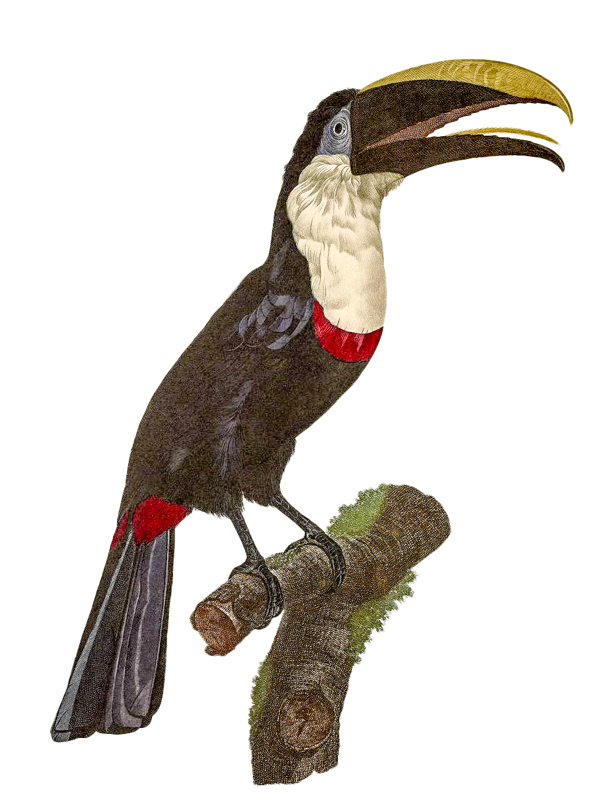

Theses on the go | Rafael Colmanetti | Mentored by Dirk Vis

Intro
General Brazilian culture and its social-economic structure
I always had a bit of revolutionist blood running through my veins. I never liked the idea that we live in an uneven world. When I was going to church in our comfortable car to pray with my family, I hated to see a lot of homeless people along the way to arrive there. The problem got bigger with me as I grew up. I do not believe in God anymore, I stopped believing when I was 15, but I do like a few things about christianism, and one of the reasons I dropped out of the church was because a lot of people weren`t doing anything related to what they were teaching. I feel disturbed by world inequality. Jump back to my school time: I always loved history and geography class. I still remember one of the first things I learned about the history of Latin America. We were the exploration colony while North America was a settlement colon.
Nowhere else I saw so many hard-working people like back in my country, still, we are all economically unstable. Many times I tried to find an answer to that. I prayed, I cried despite having a house and the privilege of having English private classes, the world is not perfect. Although this seems irrelevant to my thesis, it is part of the reason why I like to investigate social and cultural topics.
I live in Europe since 2015 and the comparison between here and Brazil is part of my daily life. While here, in the Netherlands, we can enjoy the safety, better infrastructure and a more stable political moment, Brazil has one of the worst moments in our democratic history. Devastation levels are in the maximum, there is a huge tropical fascist wave rising, and we are still fighting for our spiritual independence. Still, I can see that we laugh more than here in the Netherlands and we have a feeling of hope.
It is controversial for me that moving abroad – looking for better education – made the connection with my homeland, Brazil, grow stronger. I was born in São Paulo/BR and I’ve always been excited to discuss and read about my country, its social problems and big geography, not to mention the huge cultural and gastronomical diversity. Our music, food, artists, social movements, cinema, and familiar structures are influenced by immigrants from all the world: Portuguese, Spanish, Italians, Dutch, Germans, Syrians, Lebanese, Japanese, Turkish, Chinese, and of course, people from all over Africa.
Brazil has a plural society, with its origin among the miscegenation of the Indigenous people native from South America, Europe and Africans. The country was a Portuguese colony for around three centuries and has enjoyed its independence since 1822. The homeland of carnival and samba has a multicultural population of 210 million people. It is funny for me that many people I have spoken to, would not believe that Brazil is still a third world country. Sadly, around 50 million people are living below the poverty line, with their income being inferior to R$ 420 reais (around 50 Euros in 2020). Most of the impoverished people reside in informal settlings in urban areas that enormously grew over time in population and space and are today known as “favelas” . These places are characterized by a strong sense of shared identity, and solidarity plays an important role. At the same time, they are the hotspots of crime emerging from the leading drug gangs . This contrast generates a sense of attraction for the “gringos”, who often have a romantic view on the events inside the “community” but which does not represent the hard reality.
Still today, our land is a colony and, the colonial period in Brazil has a direct influence on the way we live today, from our costumes to our territory. Even after many years of our emancipation, there is no political articulation to repair the economical gap left after the exploitation of our natural resources and our territory from Portugal. The multicultural formation of my country makes it hard for people to find a common ground to fight for better social politics and to make Brazil, in fact, a democratic republic. The first thing that comes to my mind when someone talks about colonialism is that “It is not over yet”. There are many countries in Europe, such as the Netherlands or France, that still influence former colonies.
Nowadays, we can sense the motion of change as the citizens start to confront the inequality of the system and speak up for themselves. There are activists with a loud voice that try to involve other citizens and want to make an active change in the political and societal system. Often, these groups arise from the inside of discriminated communities. For example, groups like “Mídia NINJA” or “Voz da Comunidade” are creating new ways to document our reality, such as providing live-streams during strikes on site. Additionally, they have editorial independence by not having a big sponsor behind their curated work.
Despite all the political and corruption-related scandals, there are many other problems to be accepted in our modern society. As stated before, Brazil is huge and embraces different cultures and beliefs and the freedom of speech remains often restricted. With Brazil being a former catholic country, people are struggling to accept and discuss topics such as gender identity, drug liberation, abortion, and religious freedom. It is fair to say that the feeling of being left aside can bring a sense of unity among all excluded people. The feeling of empathy and cordiality should help us to understand and respect more each other, and not to judge our fellow for his different opinion.
The unequal treatment of minorities and the ‘normal’ people in contrast to popular, influential or simply very rich citizens, is strongly connected with the high corruption in Brazil; which is a result of the interdependence between the public and private sectors. Not surprisingly, we have a strong tradition of privatization of our natural resources. Many political decisions are not transparent and public biddings are often involved in corruption scandals. On the opposite side, I can see a great articulation and popular organization in response to the policy of violent repression and cuts in Culture, Health, and Education. This investigation is relevant due to the speed that our habits are changing. The form of proof is the increase of a new generation of activists that embraces new technology and is not afraid to show off their flags.
Our indigenous people come from a historical fight for the legitimation and the use of their territory for more than five centuries. The omission from the government towards social movements makes evident the lack of interest in fixing its colonial debt and these setbacks are a direct consequence of the far-right politics who represent the interest of landowner and the expansion of agribusiness.
Last year, we saw the world turning its attention to the big fires in the Amazon forest. The fast expansion of the agro-business and lack of a policy of environmental preservation helped to grow the number of fire incidents. We need to be aware that during the dry season, it is normal to have fires, but this year we broke our record. There is a bit of irony in these last events. In opposition to what people think, Brazil has a strong policy of preservation, and unlike Germany or Spain, we do have a lot of natural forests.
Despite all problems, the Brazilian territory are the most preserved in the world. In the Brazilian Amazon, the natives protect 27% of the forest and their reserves supply more than 5,2 billions of tons of water a day and, according to ONU’s report from August 2019, one of the solutions for climate change is the strengthening of indigenous people and local communities right over their lands. The document recognizes that the traditional knowledge and sustainable management of forests and lands are critical to reduce and remove carbon dioxide.
I spoke to many people, natives and activist, and I did many interviews to understand the lack of representatives for minorities in our democracy and I do hope that this thesis can be an opening door to a bigger and more complex investigation towards the right of minorities to express themselves.
When I first started thinking about my thesis, I was not sure about how and what do to with it. I would like to investigate art and its consequences on our daily base. For me, art was always the strongest weapon that we can use to investigate and question the world. More than this, art plays a political and social role in mankind’s history and it has always been a tool of emancipation and confrontation. Movements like Realism brought the need to talk about the daily-life instead of putting elements of the high society beyond the common interest.
Having said this, I want to take the thesis as an opportunity to not only discuss Brazil but to reflect what has changed in the last decades and why activism is still relevant and even more, why it is essential to our democratization process. At first, I will explore and investigate our history and explain how slavery and colonialism had a direct effect on our economic and social gap. Secondly, I will investigate the ambivalent role of religion within activism. In the last chapter, inspired by our truculent police and lack of transparency from our government, I will present interviews with people involved with activism about the current situation of the South American original people. Ultimately, I will have an extensive visual archive consisting of paintings, portraits, maps, documents, a glossary, and a list of references to further research.
Part I
Historical Background–General Brazilian culture and its social-economic structure
I grew up hating Portuguese people–luckily this feeling was drowned away and now is part of my secret past. I always loved history classes and could not stop reading about the colonialism period; 243 years of exploitation, five million slaves brought in huge trans Atlantic ships (see figure below), more than two million indigenous people dead. For a long time, the data was fixed into my mind. Ironically, I have Italian citizenship and also Portuguese ancestors, including my grandfather`s grandfather who worked as a lawyer for the royal family of Portugal. Because of fate, I found a ticket to Porto and finally thought: I’ll meet the settlers. I was amazed by how much the Portuguese were informed about things going on in Brazil, like novels, music and Youtube channels and just how much they admired and liked it. To my surprise, I was well treated and they loved Brazilian culture. I felt so ashamed of all the anecdotes we do with then. Even more, I felt like an asshole for the treatment we gave to “Tugas” in Brazil. We make jokes with them and when we want to call someone a donkey we call him Portuguese ... It’s the result of a long-lasting one-sided relationship between the colonizer and the population it suppresses. Today, I can`t blame the Portuguese people for the current situation, since a lot has changed since our independence–September 7, 1822. But today I understand how slavery and colonization relate to our contemporary frame.
And sorry to be so personal, but from now on I would like to invite you to get rid-off your concepts of society and modern technologies such internet or smartphone. We are now traveling back in time and the year is 1500. Looking through the Blaeu’s Atlas from that period of time, we can see how little was known about the today called South-America. From fauna to flora to animals, there was plenty of new discoveries to be made. Being aware that between the 14th and 15th century European people were at the peak of territorial expansion and exploration.
When the Portuguese first landed on Tupiniquim ground, they encountered cultures very different from their own reality. From wildlife to social habits, it was another world. There are some disagreements about when and how the Portuguese first arrived in Brazil. Some argue that the continent was a stop before reaching the east and others claim that the Portuguese arrived there by accident trying to find an alternative way for India which explains why the Latin American natives were called “Indians” at first. The reasons that led the Portuguese court to colonize as much territory as possible are still common to the modern world: expansionism and commercial sovereignty. Even 500 years after the colonization of our country, we can still see the great influence that its past has on our contemporary Brazil, for instance, many cities, schools and highways have a name of indigenous origin, like the little city I grew up: Igarapava, that means small harbors for canoes.
The first shock for the colonizers was the absence of concrete cities. There were no streets, no one wore clothes, and it was summer all the time. According to IBGE (Brazilian Institute of Geography and Statistic) and Historian Carlos Fausto, it is estimated that 8 million natives lived in pre-colonial Brazil, divided into more than 1,000 tribes. Christopher Columbus’ documents report cities with up to 2,000 inhabitants! The native way of life also drew attention to the colonizers as the societal rules of the natives differed a lot from what they were used to. Apart from the absence of Christianity, a different family structure could be found. There was no marriage and polygamy was common. The early documents of the new world were very intriguing, from Hans Staden written adventures about his time during the xv century among natives in Brazil to the terrific Frans Post and his romantic representation over the then Dutch Brazil, the information seemed to arouse the curiosity and imagination of Europeans. According to a document written in 1526 by the castaway Enrique Montes, who lived among the Indigenous, barter was the basis of relations:
“Low-quality hooks, daggers, and knives, small mirrors, combs, large and small scissors, old screws, chickens and ducks were replaced by “honeycombs in combs”, corn loads, “porcupines”, probably capybaras, armadillo skins to make armor for horses, oysters, palm hearts and deer.”
The first movements since Brazil’s occupation were already a premonition of all violence that would happen later. By trading low-value items for ore and wood, the Europeans began the process of colonization and catechization of the natives in full swing. The Portuguese method of doing business in South America was already well known and well-practiced in the Mediterranean region and their former colonies in North Africa. However, the scarcity of ores did not discourage settlers, who were delighted with the local agricultural skills.
By the year 1534, the Portuguese found a more effective way to keep their colony profitable and easier to administer. The implementation of hereditary captaincy initiated forced colonization and unbridled violence. There were created 14 captaincies (see map below) and their beneficiaries were elements of the Portuguese crown. The grantee system that combined feudal and capitalist elements was already in use on the islands of Madeira and the Azores. Within this structure, we can find the first traces of a centralization of power that is still so common in Brazil today. The captaincy system lasted until 1821, a year before Brazil’s independence, and then most of the captaincy was transformed into provinces.
Until the first half of the sixteenth century, the Brazilian colony in the new world was not as profitable as the other Portuguese colonies in Africa. However, the intense disputes between the French and English were crucial for the Portuguese to fortify and organize their powers there.
As a result and to increase the Portuguese engagement on the South American continent, the colonizers started to bring slave people from its African colonies creating a new maritimal trans–atlantic slave trade.
In the early 1530s, after many conflicts, the Portuguese started to face problems with the natives. The local natives were really hard to domesticate to the European standards and often fought back the oppression or even committed suicide. As a result, the high court in Portugal found it cheaper to bring slaves from Africa to Brazil to help the Portuguese with the hard labor in the sugar cane and coffee fields. The abolishment of slavery would eventually happen in late 1888. During this period the country received 4,000,000 Africans, four times more than any other American destination. To bring this amount of people, the Portuguese stuffed their ships until the last free space was filled. Needless to say that this inhuman way of shipment cost a lot of lives. For comparison, Brazil received 40% of the total slaves brought to the Americas, while the United States received only 10%. Due to this large flow, the Afro-descendent population in Brazil is larger than in most African countries.
The abolitionist movement against slavery in Brazil began to gain support in the late 1860s , partly due to pressure from the outside world. Moreover, after the end of the legal slave trade, Brazil experienced a shortage of labor because slavery was sustained by continued slave imports and not the reproduction among the enslaved population. Finally, slaves became harder to control, and slaveholders feared riots. In 1871, Brazil passed the “Free Womb Law”, which freed the children born of slaves. In 1885, Brazil passed the Sexagenarian Law, freeing slaves older than sixty-five years, although few slaves reached this age. Finally, on May 13, 1888, the “Golden Law” abolished slavery with these simple words: “From the date of this law, slavery is declared extinct in Brazil.”
The emergence of poor communities in Brazil can be directly linked with the succession of the abolition of slavery. It is misleading to think that the lives of slaves improved after abolition: thousands of slaves were taken to the streets, with no rights to house or food. Almost none of them was able to read or write, they were victims of racism and found it very difficult to find a job. The portrait of the new Brazil already started with a big social difference between classes and was full of prejudgment and racism. Still today, afro-descents, indigenous people and medium and lower classes are fighting for having a normal life, disconnected from history as a colony.
Part II
mapas The emergence of poor communities in Brazil can be directly linked with the succession of the abolition of slavery. It is misleading to think that the lives of slaves improved after abolition: thousands of slaves were taken to the streets, with no rights to house or food. Almost none of them was able to read or write, they were victims of racism and found it very difficult to find a job. The portrait of the new Brazil already started with a big social difference between classes and was full of prejudgment and racism. Still today, afro-descents, indigenous people and medium and lower classes are fighting for having a normal life, disconnected from history as a colony.
Part III
Activism and Social Movements in Brazil
In Brazil, nothing happened in a pacific way. The land was vastly exploited during the colonial period. In a nutshell: there were many wars before we become an Empire (1822) and many more to send the court, installed by the colonizers, back to Portugal and start a Democratic Republic (1889). After, we needed to go out to the streets to put an end in the military regime (1964-1984).
There are different political fields in Brazil, like the young conservative-right movement MBL,(“Movimento Brasil Livre”, Movement Free Brazil) that focuses on the free market and often ignores the social movements and their political fight. On the opposite side, there are groups acting more in the area of social development and democratization of the national territory, like the indigenous movement and its historical fight to reconquer their territorial rights.
There are also other examples out of the political circle that were extremely relevant to Brazil. For instance, the woman and human right activist Maria da Penha was a victim of domestic violence by her husband and she brought the case to the Federal Court of Brazil. In 2001, the Inter-American Court of Human-Rights, for the first time in history, considered this crime of domestic violence. In 2006, it was sanctioned by the Brazilian government the law against domestic violence towards women. The law is now known as “Lei Maria da Penha” (Maria da Penha’s Law) and protects many women in Brazil.
As mentioned before, the digital tools have been helpful but they can also turn into an enemy of activists, for instance, it is easier to track someone that is always online on Instagram or twitter if the person is not aware about online privacy. Especially in the journalistic field, where technology can shorten distances and the speed that information goes around. On the other hand, it also makes the people more aggressive on social media and less open to discuss, as it is common to see on Facebook serious issues turning into a meme war. Despite this dualism, there are groups that are making good use of this new era by changing the way journalism is being done, changing the professional reporters and its high-end technology TV sets for the amateurism of the new generation, who often start their work at a local scale.
Our society is divided in several ways, there are many spiritual beliefs, musical styles, and family structures. Because of this mix it is hard to find a common ground between these groups to articulate ourselves against the corrupt politicians such as Aécio Neves, Sarney or Maluf.
Part IV
How was the relation between the new formed country and its original people?
The first group to be involved with the indigenous movement were the Villas-Bôas brothers. Orlando (1914–2002), Cláudio (1916–1998), and Leonardo (1918–1961) Villas Bôas opposed the policy of the Brazilian government, which at that time favored rapid integration of Indians into the national society and economy. They argued strongly that reservations should be protected from outside influences for an indefinite period to protect Indian cultures and ways of life.
The brothers were members of the Roncador-Xingu expedition of 1943 sent to survey unexplored regions of central Brazil. Their experience with unacculturated Indians of the Upper Xingu River Basin convinced them to remain there and devote their lives to the welfare and protection of Indians. In 1954, when a devastating measles epidemic struck the Upper Xingu tribes, the Villas Bôas brothers mobilized the support of the Medical School of São Paulo, which set up a model program of medical assistance for the Indians.
During the military period, the brothers went on an expedition to the Xingu, to start a process of settlement in the countryside of Brazil. They were directly responsible for the creation of the first indigenous reserve in Brazil, the Xingu Reserve.
During the military period, Brazil was still exploring its own vast territory and eventually being in contact with natives tribes that have never seen before. As consequence, the actions by the Villas-Bôas brothers were an important first sign to stand up for the right of the Indigenous. Sadly, a shocking discovery was made in 2013. According to a recently found document from the military period called “Documento Figueiredo”, “more than eight thousands of indigenous people were killed during the military period. These papers also record genocide crimes against Brazilian natives, including the mass murderer, torture and use of chemical weapons. It was also discovered that Native Protection Service enslaved and murdered native kids instead of giving them protection. The document can be found online on many platforms.
There are a few institutions in Brazil to promote and protect indigenous culture, among them, the most notable was the “Fundação Nacional do Índio” (FUNAI, National Indigenous Foundation), founded in 1973 and it is considered the Brazilian government body that establishes and carries out policies relating to indigenous peoples. FUNAI is responsible for mapping out and protecting lands traditionally inhabited and used by these communities. It is in charge of preventing invasions of indigenous territories by outsiders and also responsible for reporting irregularities against their land towards the government.
The 2010 IBGE census state that in all regions of Brazil can be found indigenous communities, with a total population of up to 900,000 people. Of these, 62% live in the so-called Indigenous Lands, already demarcated or on demarcation. It is a fact that throughout the history between the state and the indigenous peoples the proposal has always been of “integration” to the non-Indian world. But the conditions for this have never been satisfactory, causing a lot of damage and reaffirming prejudices.
Despite big support from activists groups and big media, there was a rise in the agro-business and the consolidation of agricultural expansionism in Brazil after the impeachment of the president Dilma Roussef, in 2016. The interim president was supported by farmers and the relation between natives and farmers became less civilized and more violent.
In contrary to what we see happening with the physical territory, in the online word the natives could claim their space and use the internet as a tool of emancipation and reaffirmation of identity.
Brazil is still a democratic place and the internet is a place that we can speak out in a relatively safe way. So far, the natives are using the internet to restate their traditional culture and to keep in contact with different groups that are located all over the country. Their freedom to walk freely in the country was taken together with their lands and, now they are trying again to find their space and they found in the web a place to make their voice to be heard.
Part V
Indigenous activism and the digital era
“The indigenous activist of the early 21st century experiences new contemporary forms of meaning circulation determined by the web. Aware of this reality, indigenous members of this movement, in addition to expanding the dissemination power of their work as activists, build in this space new forms of subjectivities.”
The first time I remember I really played with a computer was around 1996. By the time, I had a SNES and later on, I got an N64, but never a PC. There was a girl in my class, who was also my neighbor, that had a computer and one day she invited me over to play Aladin on her Windows 95. I was surprised by its colours and modern design. Later on, I would move to another city and would play a lot of DOOM on my uncle`s computer. Well, many people won`t remember, but I needed to wait ‘till midnight to use the internet because it was cheaper. My hardest struggle with technology I can remember was when I went walking to school and needed to step in a way it would not stop the music in my disc-man.
I have a cousin, Marcus Colmanetti, that was graduated in agronomy and worked with the environmental public sector in Brazil, he was in constant contact with many indigenous people and I had the chance to talk with Mrs. Alaide Guajajara, an indigenous Leadership from the Guajajara ethnicity. She told me how their people make use of the internet to share information about their festivities, traditional folklore, language, culture and also, speak out about their rights about their land but also, how is hard for them to make proper use of this new technology and I thought this was interesting because, in my point of view, the western civilization has also problems with social media and many times people cannot discern fake news from what is real.
In the thesis of Pedro Paulo dos Santos about the Indigenous presence on the internet, there is a study of the influence of the use of internet by the natives. In the 2010s the government created free hotspots zones in more remote areas of Brazil. The people appreciated these offers and as consequence many blogs about the indigenous costumes and culture were popping up on the web. With this, schools and social programs were not the only way of integration between western and traditional culture. Many blogs and WordPress created by the natives were similar to the ones from the rest of the Brazilian population. The Internet made the connection between the natives grow stronger and it is an important tool in the organization and denunciation of violence against them.
When I did a simple search with the terms “aldeia indigena” (indigenous tribes) on Facebook I got surprised by the level of organization and the number of groups that are found online. From a shared calendar of their festivals to denounce the indigenous genocide, there is simply to much content to absolve. In the beginning I wanted to discover more about the phenomenon of indigenous online activism and I found much more than I expected. I did a few interviews to understand better the influence of the internet and is their vision on colonization of Brazil. The capacitation of the use of the internet is a big step to remark the territory and to demand a clear and transparent posture from the government when taking legal actions that have a direct effect on the natural reserves.
Next, I collected a few material about the first registers made by indigenous people in internet that I could find. I did a work about Geocities (a social medial from the 90s similar to what is FB today) and I found that despite the gap between traditional and western culture and, both group of people used the web in similar way: A tool to reduce distance and find people with same interest. So not only the natives got a voice, but many Brazilian people also wanted to listen, they were interested in the native culture. I had many friends that went with a boat to a native area and did participated in their traditional rituals.
In 2013, during the rise of violence against the natives, many people started to show empathy with the case by changing their surnames to Guarani-Kaiwa (see figure below) the most impressive indigenous group from Brazil. The act of change it own name means that you feel connected with that people and it is way to demonstrate public support towards their case, and that we are embracing the traditional culture.
Another example of the indigenous use of the web was the articulation of the “Acampamento Terra Livre” (Free Land Camp), that held the 15th edition in 2019, in Brasília. This is a national level event where Indigenous peoples from all over the country and from various ethnic groups gathered thousands of leaders in order to demand their rights, which have been systematically dennied. Mostly of their coverage campaing is made in colaboration with other groups, as the previous mention group NINJA.
I asked my friend, activist and photographer Leo Otero
to use a few photos he did when he worked together with the indigenous people during the journey to show what was the outcome of this big meeting.
That was the first step to the first international act, the Jornada Indigena na Europa (Bloody Indigenous Journey in Europe), where several Indigenous Leadership such Sonia Guajajara, Dinaman Tuxá and Nara Baré (side page), among others, traveled 12 European countries to denounce the serious violations perpetrated against the indigenous peoples and the environment of Brazil. Those journies are a result from a direct war between indigenous people and farmers where many indigenous peole are killed. For this the necessity of the national and internation public opnion are necessary to press the government to change our politics towards our original people.
Interview: Elany Guajajara
Alayde Rosa Tentehar Ingarana is indigenous from the Guajajara people and she shared a bit of her point of view about the colonization of Brazil and indigenous culture. We spoke by whatsapp on 10.12.2019.
Rafael: How is indigenous culture and folklore maintained?
Alayde: It depends, each person has its form and its identity. But lately, these traditions have been undergoing a transition due to the arrival of computers and communication through social networks. It has sought to maintain through our festivities and the constant use of our mother tongue.
Rafael:Could you share a little about the colonization of Brazil from your point of view?
Alayde: Colonization for us has the power to impose one way of life on the politics of a people. In our case the way of life from the point of view of Europeans being is that only their way is the right and wanting to submit us to it brought our struggle for RESISTANCE. In short, colonization decimated millions of native peoples that existed here. Before the invasion of the land they baptized from Brazil, there were millions of indigenous peoples with their freedom to come and go, their songs, their festivities, their paintings and there were conflicts between some peoples, but they had their freedom over the land. After the law of sesmaria and other laws, they gave us a piece of land, it is not just for the land, but for the deprivation of freedom to come and go where one wants. Some peoples are still fighting for the demarcation of their lands, many have died for this cause, but the government prefers to ignore the history, anthropologist, and sociology of a people. The Indigenous don’t just want land, it’s his freedom, it’s his story about it.
Rafael: And how can people help or join the indigenous movement?
Alayde: Schools are the institutions that should best to pass on this information, as well as communications networks. Understand that each indigenous tribe has its policies, that is, its organization. We do not claim privileges, we are not victimized, only since the 16th we have been fighting for the freedom to be who we are. Today social networks are a great weapon, having secure sources and relaying the true information about the motivations of our struggles is to come together and help the movement.
Rafael: What irritates you most about the media coverage of the indigenous movement?
Alayde: It is the idea that some pass that a demonstration has the content of VICTIMISM, privileges and that we want to be better than any Brazilian citizen leading the non-indigenous society to misjudge and even inciting hatred speeches against the indigenous people.
Interview: Aleandro
Aleandro works at CIMI and he is direct contact with many natives groups and he works together with then in the dialogue with the government. We spoke by whatsapp on 10.12.2019.
Rafael: What is the difference between the CIMI and the work of the Jesuits during the colonial period?
Aleandro: CIMI is a body of the CNBB (Confederacy of the Bishops of Brazil) and since its inception has assumed a stance, a philosophy of walking with the indigenous people, always respecting their way of life, their self-determination, and its autonomy. The indigenous people organize themselves through their autonomy and their determination and CIMI walks with them in what they think is best to do in front of attacks against their constitutional rights. At any time, CIMI had a pro-elitist or pro-religious stance throughout its history; on the contrary, our performance is a political action with the indigenous people and at any time has CIMI’s indigenous people spoken of Jesus, God or Mary, it is, on the contrary, CIMI promotes the maintenance of the Iandereko, the way of life of each people, especially its religious manifestations, in the work of reconstruction of the Opuh (the prayer house of the Guarani people) and the various peoples. What CIMI wants is that religions, forms of manifestations of the sacred can be preserved. Including their cosmos visions and their way of life.
Rafael: Is CIMI an independent body?
Aleandro: Yes, CIMI is independent of the government and also of the national capital, because all of CIMI’s work is funded by the European Union’s cooperation agency. Christians European who sympathize with the violations of the rights of the original people, they contribute. There is a fund… I don’t know how it works well in Europe, but I think that’s it, you claim to be Christian or Catholic and pay your tithing, which is collected through tax… So we don’t get money from any Brazilian private companies or the government. So I don’t know how independent our independence is. Our maintenance money comes from outside. But it is much better than if we had to act depending on private companies here, which we denounce for their actions against the environment and that goes against the principle of respect, even the international conventions for consulting the indigenous way of life. It’s good that we don’t depend on any Brazilian company.
Rafael: How is the dialogue between CIMI, the indigenous movement, and the government?
Aleandro: The dialogue is made by the indigenous movement itself and CIMI observes the dialogue as a partner and denounces the state’s omission or neglect. This causes a lot of pain to the unworthy movement because they live with uncertainties, camped on the roadside, vulnerable to all kinds of aggression… end up becoming addicted to alcoholism. Especially young people, because of this idle life that does not fit with life according to their way of life, has no river to fish, has no space for traditional crops, so end up being affected by these violations and situations that are unworthy for any being human being, then CIMI closely observes this dialogue and the dialogue is made by the indigenous movement itself…
Rafael: Do you think the indigenous movement is left out of national environmental discussions?
AAleandro: There is a state policy, especially of the current government, which excludes indigenous peoples from the discussion and places them as individuals assimilated into national communion. This is not new in Brazil, this has emerged in the emergence of CIMI, when Brazil denied the existence of native peoples, denied Brazil the condition of a multiethnic and pluricultural state and this ominous discourse now returns in the Bolsonaro government. Indigenous people have direct access to consumer goods in a capitalist society, so they have the right to lease their land for mining and agribusiness, they have the right to access consumer goods, to have cars, cell phones, and as if this, the fact of having these assets made them less indigenous and became Brazilian citizens.
But the state thinks, from the talk of ministers and the present itself, to give up its responsibilities in highlighting the original peoples, because it is up to the legislative and federal power to take care of indigenous health, the education of the undue people, which must be differentiated. , bilingual, which contemplates the specific way of each people, specifying that way of life itself is a learning process requires goodwill, public resources and has many expenses, and all the government wants less is to spend with the Originating peoples. So this discourse of assimilation by indigenous peoples would be assimilated to national communion and would take into account the specifications of each people, there would be the need to train for a multidisciplinary team, in short, is, in fact, the deconstruction of national rights that were decades ago, such as education and differentiated health.
Brazil is regressing in this regard, concerning the rights conquered and in the context of the environmental discussion, it is a problem the unworthy land, it is enjoyed by the Indico, how the government will use this resource? What will the government do if a ruralist has funded much of the Bolsonaro campaign? Will it assist agribusiness from land tenancy if such tenancy is unconstitutional? That is why this strategy of excluding people from this discussion.
Rafael: Does technology help or hinder the indigenous way of life?
Aleandro: It helps a lot, in the process of struggle and mobilization of peoples, technology helps, on the other hand, is something that in villages is not very assimilated. And not for us of Western civilization… The rational use of social networks, for example, is a discussion to be made in society as a whole, nor do we make rational use of social networks and technology. It’s all very new and we’re still digesting all these advances. In general, it is that something that causes damage but helps and assists but on the other hand causes an exacerbated dependence on other people. Indigenous peoples are also influenced by this dependence. Especially young people, older people are frightened by this and criticize this addictive use in young people. The older critics but from what we can see, social networks contribute mainly to a process of formation in a socio-political indigenizes conjuncture, but it is a double-edged sword because it depended.
Conclusion
During the last years at KABK I had the opportunity to develop my critical sense and my perception of the world. How to organize my thoughts and, mainly, how to position myself front ethical questions as well as explore and investigate the influence of graphic design as a tool of social transformation and emancipation. The stimulus to thinking causes the transformation and elevation of our actions, so I believe in the power of dialogue as a transformative tool and I think that graphic design plays a fundamental role in the ideological field. Artistic movements such as Realism emerged due to a new look at the realism of the time.
Practical examples such workshop about photojournalism, indigenous art, audiovisual production as a cultural and historical record of traditions can call all people to participate and bring greater awareness and integration among the people of Brazil.
Perhaps the Brazilian has not discovered how big and how special the original people of Brazil are. I believe there are many differences between these two worlds and it is necessary to observe better who are the people who really take care of our nature.
In the present time, activism has shown that the union between different classes is fundamental in order to reach democracy, and more than this, we, as Brazilians, should come together and embrace the multi-culture that we have here. All indigenous people should be respected, because in the end, this is their country. Maybe with graphic desing we can make nice books and tell the story in a respectful way, but in first place, we should try to understand better the history of our country.
The population can no longer be absent of all injustice and violence coming from the state towards minorities. My research showed that we are not ready yet to live in a plural society with different beliefs and costumes and still, there is a lack of dialogue because people are always putting their personal and private desire first, even that it signifies to not cooperate with the society in this infinity search for justice and democracy.
References
Movies:
- Xingu – Cao Hamburguer (2011)
- Embrace of the Serpent – Ciro Guerra (2016)
- The Hyperwomen – Takuma Kuikuro (2011)
- O Guarani – Vittorio Capellaro (1916)
- Macunaíma – Joaquim Pedro de Andrade (1969)
Books:
- Raízes do Brasil, 232 pages. Sérgio Buarque de Hollanda, University of Notre Dame Press, 1936.
- Histórias da Gente Brasileira, 432 pages. Mary del Priore, Leya, 2016.
- The True History of His Captivity, 191 pages, Hans Staden, Psychology Press, 2004.
- Os Sertões: edição crítica comemorativa, 704 pages. Euclides da Cunha, Ubu Editora, 2018.
Footnotes
1- São Paulo is the capital of the Province of São Paulo and its metropolitan area is home of around 12 millioms people. https://cidades.ibge.gov.br/brasil/sp/sao-paulo/panorama, accessed on 10.11.2019
2- Data from an official webpage from IBGE (Brazilian Institute of Geography and Statistics): https://cidades.ibge.gov.br/brasil/panorama, accessed on 10.11.2019
3- Data from an official webpage from IBGE (Brazilian Institute of Geography and Statistics): https://agenciadenoticias.ibge.gov.br/agencia-noticias/2012-agencia-de-noticias/noticias/23299-pobreza-aumenta-e-atinge-54-8-milhoes-de-pessoas-em-2017, accessed on 10.11.2019
4- Glossary: Favela: A pejorative term for a unique, low and middle-income, an unregulated type of slum neighborhood in Brazil that has experienced historical governmental neglect.
5- Glossary: Gringo: This word used to designate someone from abroad in a pejorative way.
6- The word we should use instead of “favela”
7- There are small Caribbean islands under colonial control by the US, UK, France, and the Netherlands.
8- Mídia Ninja are a collective group acting in investigative and independent journalism and had reached a reputation on the national level after live transmission of the 2014s strikes in Brazil.
9- Voice of Community is a newspaper created by René Simões. He was worldly recognized as one of the most influential activists for social issues for his efforts in document the occupation of the Favela da Maré from the Brazilian Army, in Rio de Janeiro in 2013.
10- Vale do Rio Doce, Telebrás, and VASP are a few state companies that were privatized.
11- https://www.nenhumagotamais.org/contexto, translate from Portugues, accessed on 10.01.2020.
12- From the webpage https://www.nenhumagotamais.org/contexto, translate from Portugues, acessed 10.01.2020.
13- Glossary: Tugas: Brazilian slang for Portuguese.
14- Willem Jansz. Blaeu, (1571 – 1638), was a Dutch cartographer, atlas maker and publisher.
15- Glossary: Tupiniquim: In Brazil, the term has come to mean “Brazilian” or “national”. The term is used as both a noun and an adjective: cinema tupiniquim (Brazilian cinema), cantor tupiniquim (Brazilian singer), and tupiniquim philosophy, Gomes, R. Crítica da razão tupiniquim, 2001.
16- A German charlatan who published in his book (True History: An Account of Cannibal Captivity in Brazil, 1557) his experiences in colonial Brazil.
17- Excerpt From: Mary Del Priore. “Stories of the Brazilian people vol. 1 - Colony.” Translated from Portuguese.
18- Brazil was under international pressure and was one of the last in the world to forbid slavery, in 1888.
19- https://www.unwomen.org/en/news/stories/2011/8/maria-da-penha-law-a-name-that-changed-society, accessed on 15.11.2019
20- Brazilian politics related to corruption but who never faced punishments.
21- https://www.encyclopedia.com/humanities/encyclopedias-almanacs-transcripts-and-maps/villas-boas-brothers, accessed on 15.11.2019
22- The Xingu Indigenous Park is an indigenous territory of Brazil, first created in 1961 as a national park in the state of Mato Grosso, Brazil. Its official purposes are to protect the environment and the several tribes of Xingu indigenous peoples in the area.
23- https://www.survivalinternational.org/about/funai, accessed on 15.11.2019
24- https://www.scribd.com/doc/142787746/Relatorio-Figueiredo, accessed on 15.11.2019
25- http://www.iela.ufsc.br/indígena-digital, accessed on 15.11.2019
26- http://www.ppgcs.ufpa.br/revistavisagem/edicao_v3_n2/artigos/7-imagens-e-subjetividades-em-circulacao-na-web-ativismo-indigena-e-cosmologias-nos-espacos-heterotopicos/, accessed on 06.01.2020.
27- Interview on page: 72-73
28- 303.4833 L435p Leal, Pedro Paulo dos Santos. Presença indígena an Internet: exclusões, convergências e o aikewara.blogspot.com / Pedro Paulo dos Santos Leal. – Belém, 2013. 113f. il.. Dissertação (Mestrado) -- Universidade da Amazônia, Programa de Mestrado em Comunicação, Linguagens e Cultura, 2013. Orientador: Profª. Drª. Ivânia dos Santos Neves. Accessed on 06.01.2020
29- Results from my personal search bar, accessed via Facebook, on 06.01.2020
30- https://www.nenhumagotamais.org, accessed on 06.01.2020